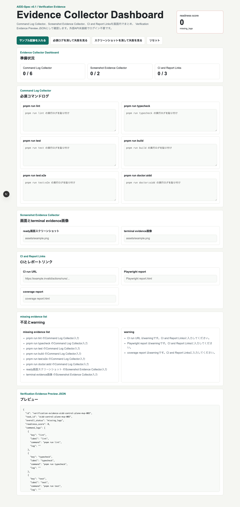
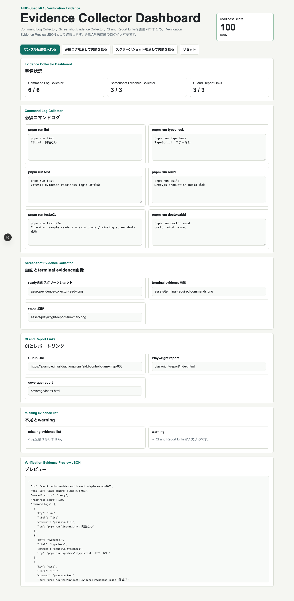
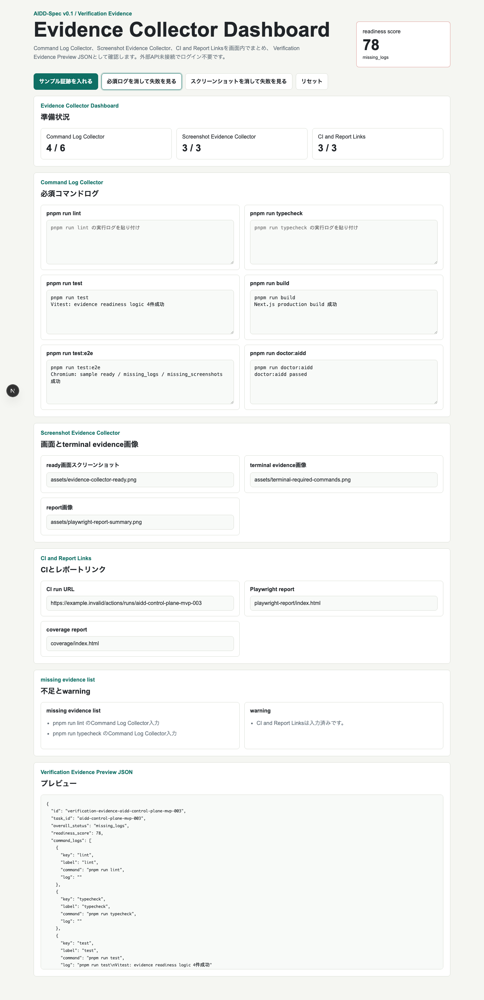
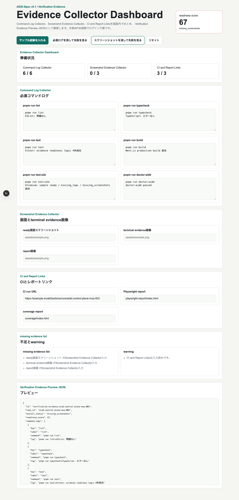
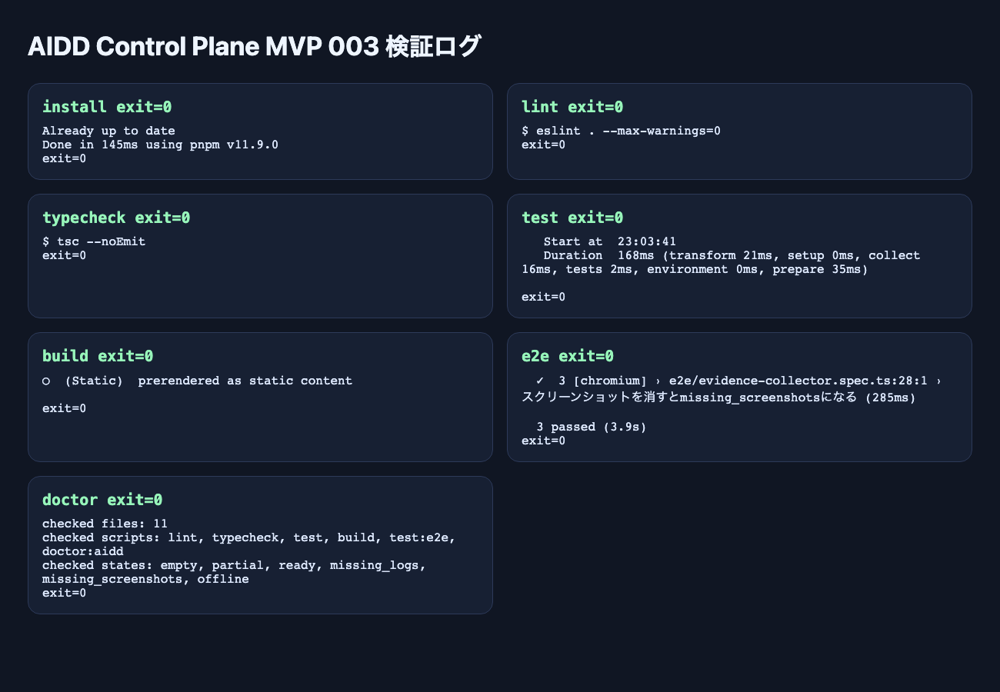

AIDD Control Plane MVP 003：実行ログとスクリーンショットをVerification Evidenceにまとめる
2026-06-28 / Codex Mastery Lab
対象: AIDD Control Plane MVP / Evidence Collector / AIDD-Spec v0.1
結果: lint/test/build/E2E/doctorログ、スクリーンショット、CI/report linkを集め、Verification Evidence JSONとして確認できるUIを作った
先に結論
MVP 001では、AIDD-Specのワークフローを画面にした。
MVP 002では、AI Task Packetなどの標準成果物をJSON Contract Checkerで検査できるようにした。
MVP 003では、その次として Verification Evidence Collector を作った。
これは、AIエージェントが「完了しました」と言ったあとに必要になる証跡を集める画面である。
検証結果:
pnpm install --frozen-lockfile exit=0
pnpm run lint exit=0
pnpm run typecheck exit=0
pnpm run test 4 tests passed / exit=0
pnpm run build exit=0
pnpm run test:e2e 3 passed / exit=0
pnpm run doctor:aidd exit=0自己評価は 95 / 100。
まだ実ファイルアップロードやGitHub連携はないが、AIDD Control Planeが「検証証跡を集めるSaaS」に近づいた。
画面キャプチャ
初期状態では、Evidence Collector Dashboard、Command Log Collector、Screenshot Evidence Collector、CI and Report Links、Verification Evidence Previewが見える。

サンプル証跡を入れると、readiness scoreが100になり、overall statusがreadyになる。ここで初めて「完了したと言えるだけの証拠が揃っている」状態を画面で確認できる。

必須ログを消すと missing_logs になる。lintやtestのログがないのに「できました」と言ってしまう問題を防ぐ。

スクリーンショットを消すと missing_screenshots になる。記事やレビューでは、UIの見た目・状態・レポート画像も証跡になる。

実行ログも画像として保存した。E2Eは削除なしで再実行し、3 passedを確認した。

なぜEvidence Collectorが必要なのか
AIエージェント開発では、よくこうなる。
AI: 実装しました。テストも通りました。
人間: どのテスト？どのログ？どの画面？CIは？この確認を毎回チャットでやるのはつらい。
だからAIDD Control Planeでは、完了報告ではなく、証跡を集める必要がある。
必要な証跡はたとえば次。
- lint log
- typecheck log
- unit test log
- build log
- E2E log
- doctor log
- UI screenshot
- terminal evidence image
- Playwright report
- coverage report
- CI run URL
MVP 003は、これらを画面上で集め、Verification Evidence JSONとして出す。
実装したこと
主なファイル:
experiments/aidd-control-plane-mvp-003/generated-repo/app/page.tsx
experiments/aidd-control-plane-mvp-003/generated-repo/src/lib/evidence.ts
experiments/aidd-control-plane-mvp-003/generated-repo/tests/evidence.test.ts
experiments/aidd-control-plane-mvp-003/generated-repo/e2e/evidence-collector.spec.ts
experiments/aidd-control-plane-mvp-003/generated-repo/scripts/doctor-aidd.mjs中心のロジックは src/lib/evidence.ts。
定義した状態:
empty
partial
ready
missing_logs
missing_screenshots
offlinereadyになる条件:
- 必須コマンドログが揃っている
- スクリーンショット証跡が揃っている
- readiness scoreが100
CI URLやreport linkは、今回はwarning扱いにした。
理由は、MVP 003はまだローカル検証段階で、GitHub API連携やartifact自動取得がないからである。
E2Eで確認したこと
Playwrightでは3つ確認した。
サンプル証跡を入れるとreadyでreadiness scoreが100になる
必須ログを消すとmissing_logsになる
スクリーンショットを消すとmissing_screenshotsになる結果:
3 passed今回一度、E2E前に .next などを消してから実行しようとして安全ゲートに止められた。
そのため、削除なしでE2Eだけ再実行した。
結果は問題なく成功した。
doctor:aidd
doctor:aidd では以下を検査した。
- 必須ファイル
- npm scripts
- 必須UI token
- empty / partial / ready / missing_logs / missing_screenshots / offline
- 通信/保存系APIの禁止
- 外部URL禁止
結果:
doctor:aidd passed
checked files: 11
checked scripts: lint, typecheck, test, build, test:e2e, doctor:aidd
checked states: empty, partial, ready, missing_logs, missing_screenshots, offline
exit=0今回分かったこと
1. AIDD Control Planeの価値は「完了主張」を「証跡」に変えること
AIが「できました」と言うだけでは弱い。
AIDD Control Planeでは、次をセットにする必要がある。
実装
検証ログ
画面キャプチャ
レポート
レビュー
学習ログMVP 003で、その入口ができた。
2. readiness scoreは分かりやすい
証跡が揃っているかを0〜100で表示すると、レビュー前に状態が分かる。
これは初心者にも説明しやすい。
100: 証跡が揃っている
75: 何か足りない
0: まだ証跡なし3. CI URLは最初はwarningでよい
今のMVPはローカル検証段階なので、CI URLがなくてもready自体は可能にした。
ただし本番SaaSでは、L4準拠にするならCI URLとartifactは必須にするべきだ。
まだ足りないもの
未到達:
- 実ファイルアップロード
- GitHub Actions artifact自動取得
- Playwright reportの取り込み
- coverage reportの取り込み
- 永続化
- 複数プロジェクト管理
- チーム共有
次に作るもの
次は MVP 004: GitHub Actions L4化 が自然だ。
MVP 003で証跡を集める形ができた。
次は、その証跡をローカルではなくCIから取る。
MVP 001: ワークフロー画面
MVP 002: Contract Checker
MVP 003: Evidence Collector
MVP 004: GitHub Actions L4化まとめ
MVP 003で、AIDD Control Planeは「完了主張」を「証跡」に変える方向へ進んだ。
command logs
screenshots
reports
CI URL
-> Verification Evidence JSON
-> readiness score
-> missing evidence listまだ完成SaaSではない。
しかし、AIDD-Specの重要な成果物であるVerification Evidenceを、実際のUIとして扱えるようになった。